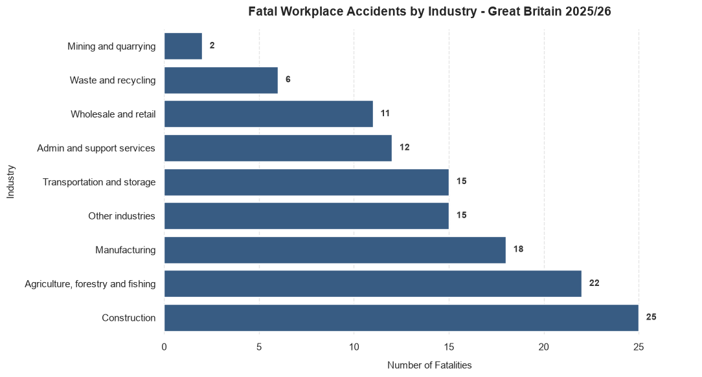
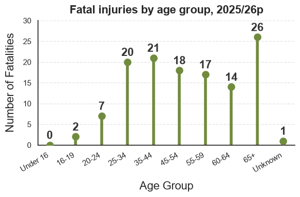
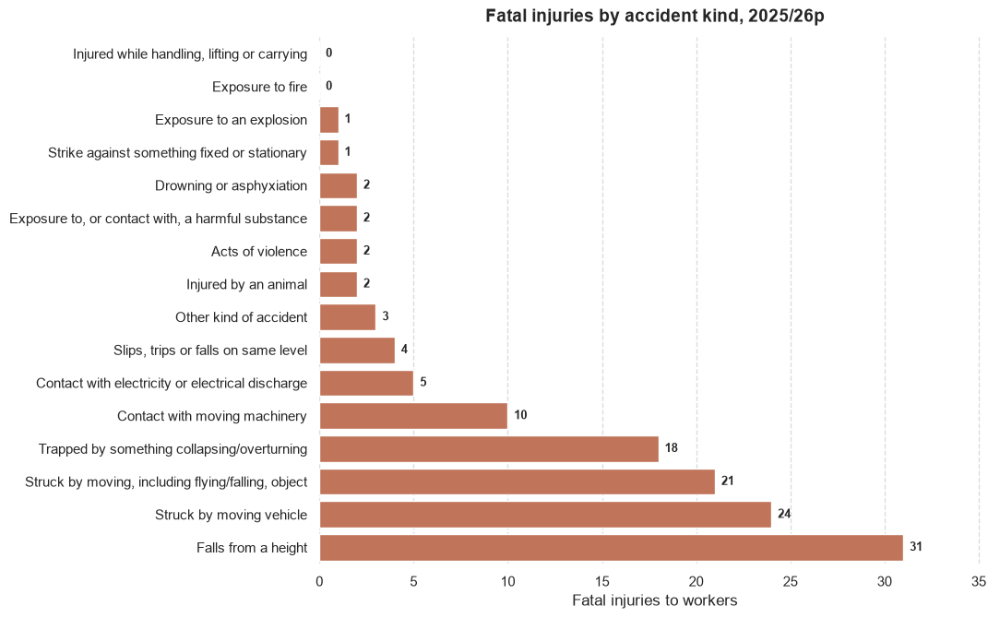
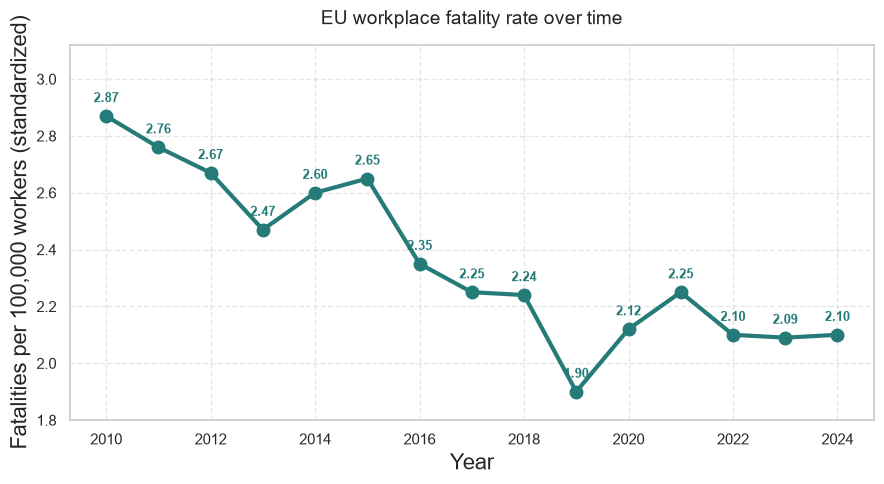
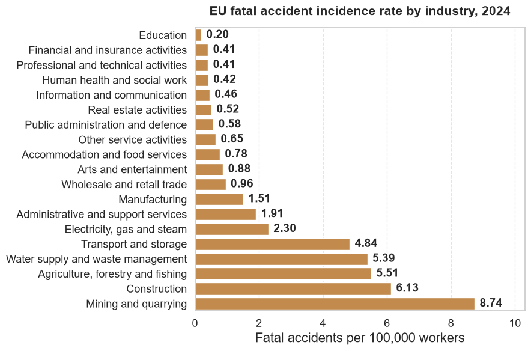
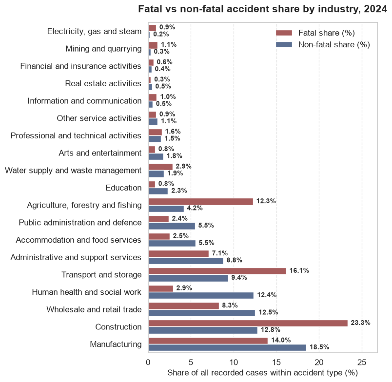
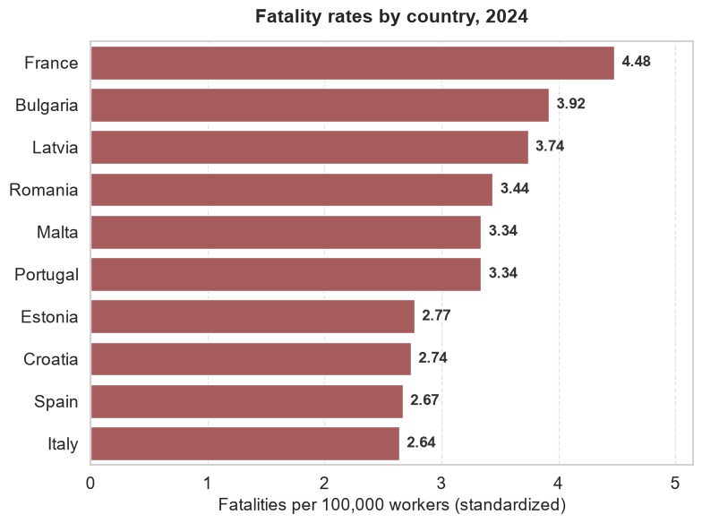
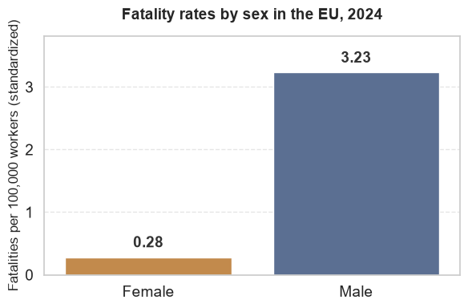
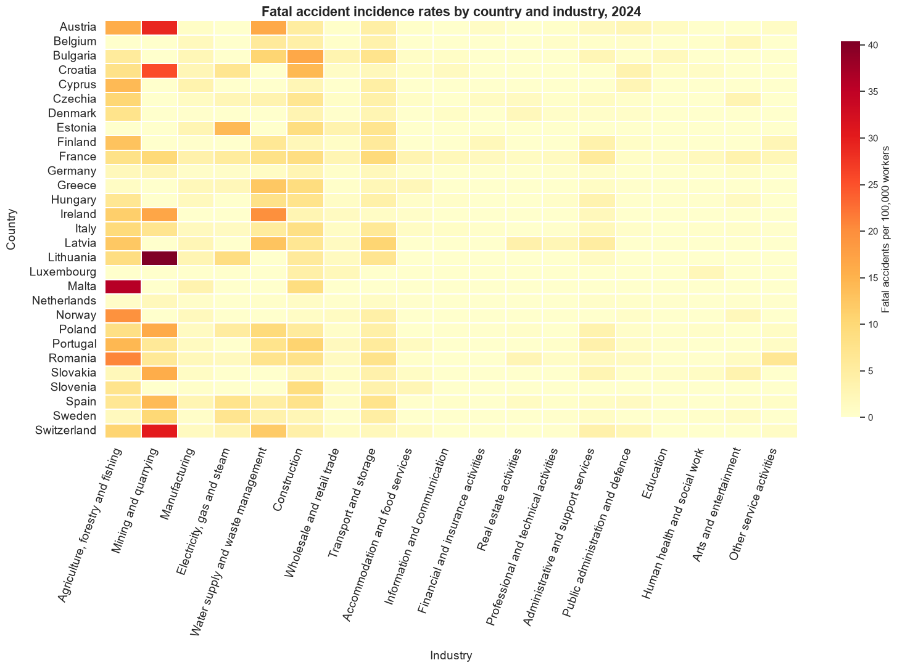

November is a quiet, cold month. On November 1st, people across Europe visit cemeteries to remember family members and friends who have passed away. It is a time for reflection on how fragile human life is.
Usually, we talk about death in abstract terms or look at it through cold data. But behind every number in government statistics lies a real person. This article looks at workplace fatalities using data analysis tools in Python (Pandas, Matplotlib, Seaborn, NumPy), combining official figures from the UK Health and Safety Executive (HSE) and Eurostat. However, data cannot capture everything. It does not show deaths from natural causes that happen during a workplace shift, nor does it measure the shock of sudden, violent tragedies.
1. Understanding the Data: Why UK and EU Timeframes Differ
When comparing safety statistics, a key technical detail appears: the UK data covers the 2025/26 period, while Eurostat data covers 2024. This difference comes from how each institution collects and reports information:
- Great Britain (HSE): Uses a financial reporting year running from April to March. The latest provisional figures are published as 2025/26 based on RIDDOR (Reporting of Injuries, Diseases and Dangerous Occurrences Regulations) reports.
- Europe (Eurostat): Uses a standard calendar year (January to December). The 2024 data relies on national registries and social security systems, with a mandatory collection deadline of up to N+2 years (June 30).
2. Fatal Injuries at Work in the UK (HSE 2025/26)
According to HSE statistics, a provisional total of 126 workers suffered fatal injuries in Great Britain for the 2025/26 period.
High-Risk Industries
Construction recorded the highest number of fatalities - 25, closely followed by agriculture, forestry and fishing - 22. Other industries include: Electricity, gas, steam and air conditioning supply; Public administration and defence; Education; Arts, entertainment and recreation.

Age Distribution
Older workers are disproportionately affected. Workers aged 65 and older account for 20.6% (26 cases) of all fatal injuries, reflecting higher vulnerability and the physical toll of long careers.

Causes of Fatal Accidents
The leading cause of fatal injury is falls from a height (31 deaths), followed by being struck by a moving vehicle (24 deaths) and being struck by a moving or falling object (21 deaths).

3. The European Landscape (Eurostat 2024)
Looking at the broader European Union via Eurostat datasets (hsw_n2_01, hsw_n2_02, hsw_mi01) workplace safety trends show gradual improvements over the last decade, stabilising around 2.10 fatalities per 100,000 workers in 2024.

Industry Risk Across the EU
At the European level, high-risk sectors mirror the UK: Mining and quarrying leads with an incidence rate of 8.74 per 100,000 workers, followed by Construction (6.13) and Agriculture (5.51).

Fatal and Non-Fatal Accidents by Industry
This chart compares how fatal and non-fatal accidents are distributed across different industries. Construction accounts for the largest share of fatal accidents, while manufacturing has the largest share of non-fatal accidents. These percentages show each industry's share of all recorded accidents. They do not show the likelihood of an accident being fatal within a particular industry.

Country Variations and Gender Disparities
Fatality rates vary significantly by country due to industrial structures. In 2024, countries like France (4.48) and Bulgaria (3.92) recorded the highest standardised fatality rates per 100,000 workers.

The data also shows a clear difference between male and female workers. The standardised fatal accident rate was higher for men (3.23 per 100,000) than for women (0.28). This gap may partly reflect the fact that men are more likely to work in industries with higher accident rates.

The intersection of specific countries and industrial hazards is further detailed in the cross-industry heatmap below:

4. The Uncounted Realities: Natural Deaths at Work and Sudden Violence
Official data tables from HSE and Eurostat track occupational accidents - injuries caused directly by work activities or equipment failure. However, they miss a profound human reality: deaths at work caused by natural events, such as a sudden heart attack, stroke, or aneurysm while sitting at a desk or standing on a factory floor. A person leaves home for a normal shift, and their life ends at their workplace, not because of safety violations, but simply because life is fragile.
This vulnerability extends far beyond workplaces. Sudden, senseless tragedies - such as the recent terrorist attack in Krakow that abruptly took the lives of several innocent people - remind us that danger and loss do not always follow predictable patterns or professional risk matrices.
Conclusion
November forces us to confront mortality. Through data analysis and visualisation tools like Python: Matplotlib and Seaborn, we can clearly see where workers face the highest physical dangers - such as construction sites, heights, and heavy machinery. As shown in the EU workplace fatality rate over time chart, macro safety trends have evolved over the decade, while specific distributions like the Fatal vs non-fatal accident share by industry highlight how certain sectors carry a disproportionately lethal risk. Ultimately, whether analysing age vulnerability, accident kinds, or cross-national patterns, the statistics provide a concrete roadmap for where safety interventions are most urgently needed.
Sources & References
- UK HSE Statistics: Health and Safety Executive - Statistical Tables (ridfatal.xlsx)
- Eurostat Database: European Commission API Dissemination datasets (hsw_n2_02, hsw_mi01, hsw_n2_01)
- GitHub repo: https://github.com/MGACHA/Fatal_Workplace_Accidents